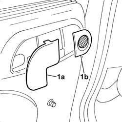

7005C44 interior handle panel - r r
- Path
- Procedures > 70 FITTINGS > 7005 PASSENGER COMPARTMENT FRONT SIDE DOORS > 7005C front lock controls > 7005C44 interior handle panel - r r
- Kind
- repair procedure (removal / refitting; the operation number is the code)
- Applies to
- all engines; all production periods
- Interactive page
- https://sloeber94.github.io/elrnDB-fPnd/en/#/2753046
Applies to: all engines; all production periods
 Removing
Removing
 Refitting
Refitting1. Using a suitable tool, prise off and remove the rear trim (1a) and front trim (1b).

Applies to: all engines; all production periods
Refitting
RemovingPosition and fit the front trim.
Position and fit the rear trim.
Topics that link to this page (20)
- 5505B11 front door wiring - r r
- 7005A05 front side door water guard protection r r or arrange
- 7005A28 front side door limiter- repair or replace
- 7005C11 front side door outside handle r r
- 7005C15 front side door lock barrel (in handle) - r+r
- 7005C42 front side door barrel/lock connecting linkage - r r with door panel removed
- 7005C43 link connecting front side door barrels/catch - r+r
- 7005C53 interior opening handle - r r
- 7005D15 front side door descending window glass r r
- 7005D21 front door window front guide - r r
- 7005D25 front door window rear guide - r r
- 7005D30 front side descending window glass scraper (inner) r r
- 7005D35 front side door manual window glass r r
- 7005E08 front side door interior panel r r
- 7005E10 front side door inner panel - r r for replacement
- 7005M26 ONE FRONT DOOR ELECTRIC WINDOW MECHANISM', LEFT OR RIGHT - R.R .
- 7005N21 front side door lock motor-lock assembley-r r
- 7010E10 rear side door inner panel - r r or replace
- 7055B38 SCUFF PANEL SIDE MOULDING (ONE) - R+R
- 7205E36 Stripping FRONT SIDE DOOR